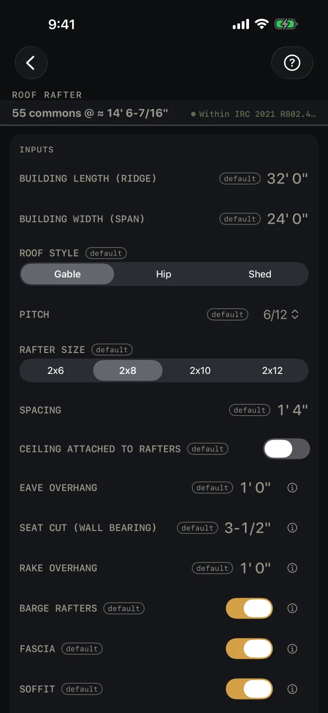
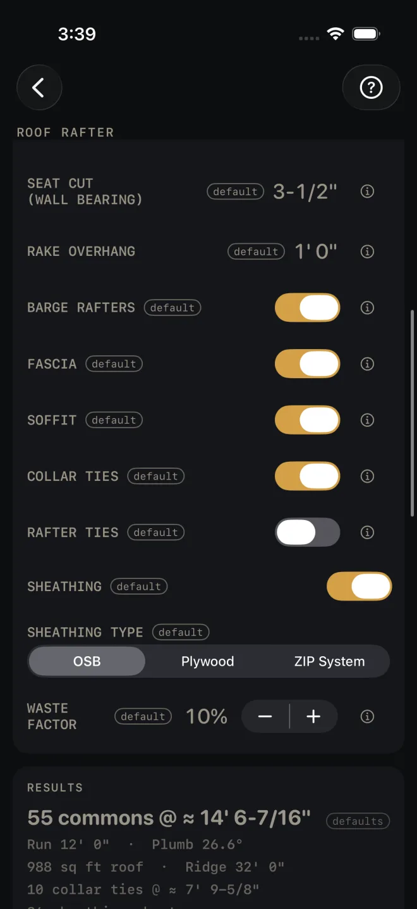
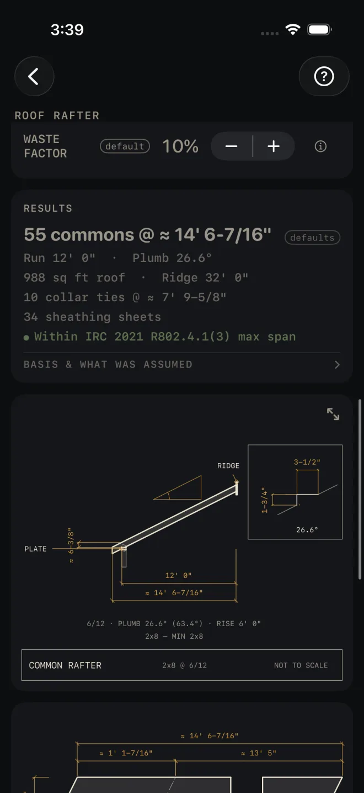
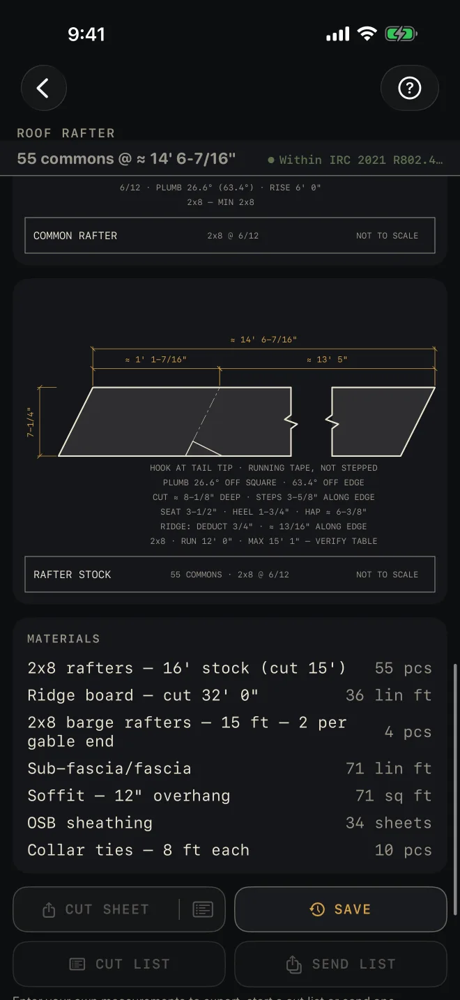

Roof Rafter
What it's for
Framing a gable, hip or shed roof with common rafters. You give it the building size, the pitch and the rafter size, and it gives you the rafter count and length, the plumb cut angle, the ridge, ties, sheathing, a rafter drawing with the birdsmouth enlarged, a second drawing of the rafter marked out on the stock, and a material list. It checks the rafter's run against the IRC 2021 rafter span table and flags a rafter that is too small.
Step by step
This example uses the numbers the screen opens with.

1 2 3 4 5- BUILDING LENGTH (RIDGE) — the outside length of the building along the ridge. The example is 32' 0".
- BUILDING WIDTH (SPAN) — outside of wall to outside of wall, across the rafters. On a gable or hip roof the rafter's run is half of this. On a shed roof it is all of it. The example is 24' 0".
- ROOF STYLE — Gable, Hip or Shed.
- PITCH — inches of rise per 12 of run. Tap it and pick from the list.
- RAFTER SIZE — the stock you plan to use. The span check tells you if it is too small.
- SPACING is the on-center spacing. Turn on CEILING ATTACHED TO RAFTERS for a cathedral or vaulted ceiling, where the ceiling finish hangs from the rafters. It changes which span table is used.
- EAVE OVERHANG — how far the tails run past the wall, measured level, not along the slope. SEAT CUT (WALL BEARING) — the level cut of the birdsmouth, which is how much rafter sits on the plate. If you also use Hip & Valley for the same roof, enter the same seat there.

8 9 10 11 12- On a gable roof only: RAKE OVERHANG is how far the roof runs past the gable wall, measured level, and BARGE RAFTERS adds the outermost rafters that carry it.
- FASCIA adds the board across the rafter tails. With it on, SOFFIT adds the underside of the overhang.
- COLLAR TIES sit high, near the ridge. RAFTER TIES sit low and stop the roof pushing the walls apart. Each switch adds its count and length to the results.
- SHEATHING adds the sheet count. With it on, pick the SHEATHING TYPE: OSB, Plywood or ZIP System. ZIP System also counts tape rolls.
- WASTE FACTOR — the extra you buy over the measured quantity.
- Read the answer: 55 commons @ ≈ 14' 6-7/16".
Reading the results

1 2 3 4 5- The headline is the number of common rafters to buy and the length of each. The waste factor is already in the count: the example's 55 is 50 on the roof plus 10%. The tie and jack counts under it include the waste too. The length runs from the ridge to the end of the tail, so it includes the eave overhang. ≈ means the figure has been rounded for display.
- The lines under it. The run and the plumb cut angle. The roof area and the ridge length. On a hip roof, the hips with their length and the number of jacks. Then the ties and the sheathing, if they are switched on.
- The span check. Green means the rafter size you chose is within the table for this run. A SPAN EXCEEDS MAX line gives the longest run that size allows and names the size to go to. Change RAFTER SIZE, or tighten SPACING. If no size in the list will do, the flag says the run needs an engineered rafter or a mid-span support. If you type a spacing wider than 24", the flag says it is not in the table and names the spacings that are. A spacing between the listed ones is checked at the next wider one. A spacing tighter than 12" is counted at 12" — the table goes no tighter — and a red line says so: SPACING 8" IS BELOW THE 12" TABLE FLOOR — COUNTED AT 12". The cut sheet's Spacing row carries the same note.
- BASIS & WHAT WAS ASSUMED — tap it. It names the span table, and the species, grade, snow load, dead load and deflection limit the table was read for. Check those against your lumber and your local snow load. A span that passes here can fail under a heavier snow load. It also says how the rafters were counted.
- The drawing shows the rafter from plate to ridge with the run, the length and the height above the plate, and the birdsmouth enlarged in the corner with its seat and heel. Pinch to zoom, drag to pan, double-tap to reset. The expand button opens it full screen. See Reading the drawing.

6 7 8- The rafter stock drawing is the same rafter lying flat, the way you mark it. Hook the tape at the tail tip and run it. It is a running tape, not stepped off. The notes give the plumb angle, the birdsmouth, the height above the plate and the amount to take off for the ridge. The headline length does not have that deduction taken off, so make it when you mark the ridge cut.
- MATERIALS lists rafters with the stock length to buy, the ridge, barge rafters, fascia, soffit, sheathing and ties. The waste factor is in these quantities.
- CUT SHEET, the small button beside it, CUT LIST and SEND LIST stay grey until you change at least one input. SAVE stays lit, but while every input is still a default a tap only answers Enter your job's numbers first and saves nothing. CUT SHEET makes a PDF, the small button beside it shares the material list only, SAVE keeps the result in History, CUT LIST puts the list on the Lock Screen and SEND LIST sends a checkable list to another phone.
Roof Rafter, and the cut sheet, cut list, send list and History buttons, are part of Pro, a
one-time purchase. See Free and Pro.
Common mistakes
- Entering the overhang along the slope. EAVE OVERHANG and RAKE OVERHANG are level measurements.
- Entering the run as the width. BUILDING WIDTH (SPAN) is the whole building, outside to outside. The calculator halves it for you on a gable or hip roof.
- Cutting to the headline without the ridge deduction. The amount to deduct is in the notes under the rafter stock drawing.
- Trusting the green line without reading the basis. The table behind it is for one species, one grade and one snow load. Yours may differ.
Related
- Hip & Valley — cut-ready hips, valleys and jacks
- Roofing
- Framing
- Reading the drawing
- Cut sheets and 1:1 templates
- Cut list on the Lock Screen
- Saving and History